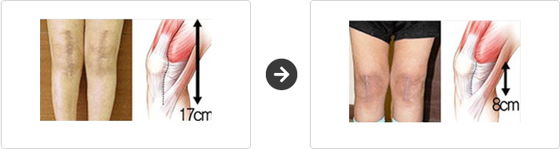
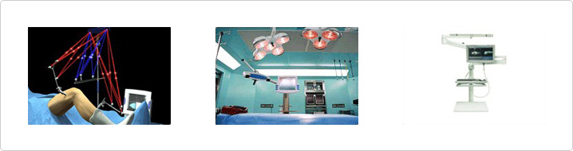
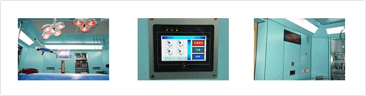
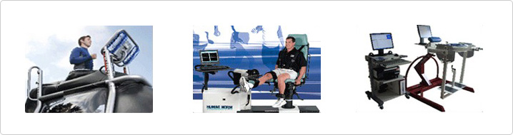

Thanks to our minimally invasive surgery, the length of the surgical incision made in the skin is reduced from 15~20cm to 7~8cm. Therefore,less muscle tissue is damaged and blood loss is reduced during the operation and patients are able to recover in a short period of time.

Navigation technology puts data about the joint to be operated on and anatomical conditions into a computer so that surgeons can accurately place the artificial joint when the operation is performed.

Operation performancecan be negatively impacted if there is secondary infection. We protect our operating rooms from the invasion of infections virus by keeping the rooms sterile and clean.

Our rehabilitation program involves therapistsin the program and introduces a sports rehab system that helpspatients to return to their normal daily activities as fast as they can.
